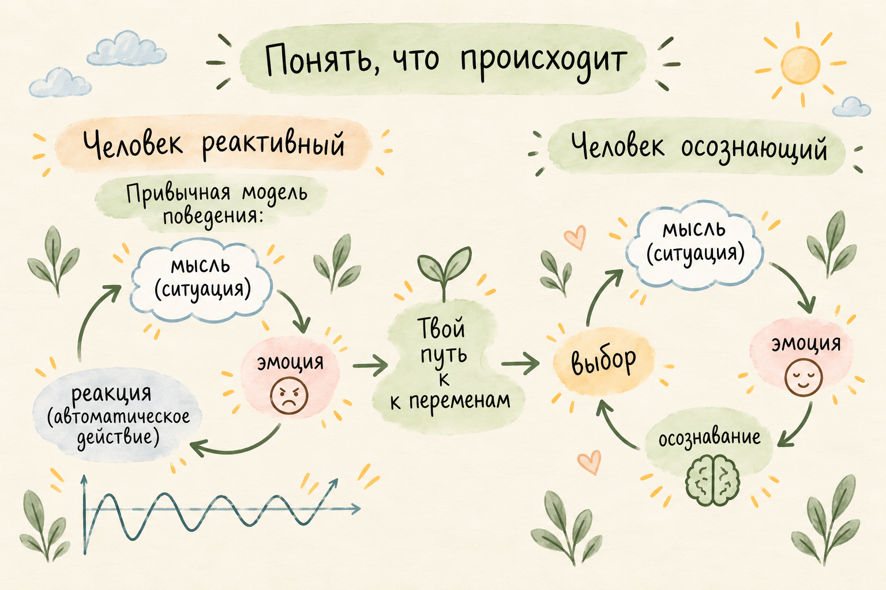

Ирина Лебединская · Социальный психолог
Психология —
от простого
к сложному.
Помогаю увидеть связи между собой, другими людьми и происходящим вокруг — и находить способы взаимодействовать с этим более осознанно.
Связатьсяпонимать → говорить → договариваться

Отправная точка
Психология — инструмент.
Психолог — человек,
владеющий инструментом.
01 / Подход


Мы живём внутри системы отношений. Наша реакция редко возникает сама по себе: за ней могут стоять ситуация, мысли, чувства и предыдущий опыт.
Психология даёт инструменты, чтобы замечать эти связи. Постепенно становится понятнее, что происходит и как можно действовать дальше.

02 / Место для ваших слов
Не обязательно сразу знать, как правильно назвать то, что с вами происходит.
Можно искать слова постепенно. Начать с ощущения, ситуации или разговора, к которому вы всё время возвращаетесь.
Иногда стоит остановиться и заметить…
От понимания — к взаимодействию
Мало научиться говорить.
Важно научиться
договариваться.
Слышать себя. Замечать другого.
Находить способ быть в диалоге.
03 / Система отношений
С точки зрения психологии, человек никогда не бывает изолированным. Мы всегда существуем внутри систем — сложных сетей взаимосвязей, которые влияют на наше поведение, мысли и чувства.


04 / Обо мне
Ирина
Лебединская
Социальный психолог
Мне важно, чтобы работа была целостной: мы смотрим не только на ваши внутренние переживания, но и на то, как вы взаимодействуете с миром, людьми, обществом.
Поэтому я использую интегративный подход — это значит, что я гибко соединяю несколько методов:
- Социально-психологические методы — помогают разобраться в отношениях, конфликтах, ролях в группе, социальных установках.
- Эмоционально-образная терапия (ЭОТ) — работа через образы и чувства. Это мягкий способ добраться до глубинных причин состояния, когда словами сложно объяснить.
- Авторские техники — мой личный метод, который соединяет эти два направления. Он помогает увидеть связь между вашей эмоцией и социальным сценарием, а затем найти новый способ реагировать.
Разговор можно начать с простого — с того, что происходит в вашей жизни сейчас.
Начать разговор05 / Онлайн-консультации
Как проходит встреча?
Это всегда интерактивный процесс. Мы общаемся на равных, я не даю готовых советов, а помогаю вам найти свои ответы. В работе могут быть упражнения, диалог, исследование образов, анализ ситуаций.
Длительность — час-полтора. Стоимость — 3000 ₽.
Частота встреч, день и час подбираются индивидуально.
С чем я работаю
Отношения, самооценка, тревожность, конфликты, адаптация, потеря смысла, роли в семье и коллективе.
Чего не делаю
Не ставлю медицинских диагнозов, не заменяю врача. Если нужна психиатрическая помощь — порекомендую специалиста.
Отдельное направление / Профессиональная инициатива
Содружество
психологов и Ко
Приглашаем к партнёрству, инвестированию, продвижению из разных областей.
Проект открыт к диалогу со специалистами, экспертами и партнёрами, которым интересны новые форматы психологического просвещения и профессионального взаимодействия.
Обсудить сотрудничествоЗаметки
Продолжение разговора.
Новые мысли и истории появляются в Telegram-группе. Здесь будет место для избранных заметок.
Читать в Telegram06 / Контакт
Начнём
с разговора?
Если хотите обсудить ситуацию или понять, подойдёт ли вам такой формат работы, можно просто написать.
Написать в Telegram